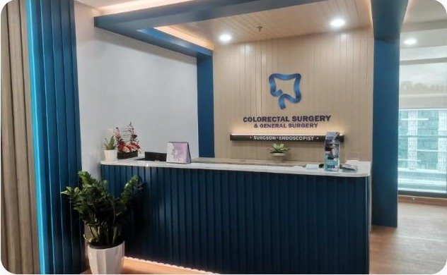

Colorectal Surgery Sabah: Leading With the Only Robotic Colorectal Programme in the State
A rebuilt, robotic-led website for Datuk Dr. Ratha Krishnan Sriram — Sabah's only Colorectal Surgeon — now practising at Gleneagles Hospital Kota Kinabalu, backed by a managed Facebook, Instagram and YouTube presence.

The brief
Datuk Dr. Ratha Krishnan Sriram is fellowship-trained in laparoscopic and robotic colorectal surgery (Taiwan & South Korea) and operates with the da Vinci Surgical System at Gleneagles Hospital Kota Kinabalu — a real, verifiable credential the previous site barely mentioned, describing his work only as "laparoscopic." The brief was a full rebuild that puts the robotic programme front and centre, while keeping every page grounded in what the practice can actually back up: real qualifications, a real former post as Head of the Colorectal Surgery Unit at Hospital Queen Elizabeth, and a real da Vinci programme at Gleneagles.
Two deliverables in one project
A robotic-led rebuild
Home, About Dr, four service pages, Gallery and Contact — restructured so robotic colorectal surgery carries the story throughout, not as a bolt-on page.
Facebook, Instagram & YouTube
A managed Facebook Page, Instagram account and a 66-video YouTube channel, giving patients video explanations alongside the site.
What the site covers
A credential-led homepage. The hero leads with "Sabah's Only Colorectal Surgeon" and the da Vinci robotic programme, backed by a trust strip of real credentials — Board Certified (MOH), da Vinci Robotic Surgery, former Head of the Colorectal Unit at Hospital Queen Elizabeth, 15+ years of surgical experience since 2005, the Taiwan & South Korea fellowship, and his MS (UKM) from 2013.
A "why robotic surgery" section. A custom precision-console graphic explains the da Vinci System in plain terms — high-definition 3D visualisation, tremor-filtered instrument control, smaller incisions, and typically shorter hospital stays — before linking through to how it applies specifically to colorectal surgery.
Four real service pages. Colorectal Surgery (robotic & laparoscopic colorectal cancer surgery, haemorrhoids, IBD, diverticular disease) carries the flagship robotic section; General Surgery, Endoscopy, and a GI Lab page (anorectal manometry, endoanal ultrasonography, biofeedback) round out the full scope of practice.
A real clinic gallery. Photos of the actual Gleneagles Kota Kinabalu clinic — reception desk, waiting area — so a prospective patient sees the real space before they arrive.
Booking built for how patients actually reach out. A "Book a Consultation" CTA alongside direct WhatsApp click-to-chat, plus full contact details for the Riverson@Sembulan clinic suite.

The social channels
Alongside the website, Click 4 Tech Solutions manages Dr. Ratha's Facebook Page (1.1K followers), Instagram account, and a YouTube channel that has grown to 66 videos — giving patients a way to see and hear the practice explain itself, not just read about it.